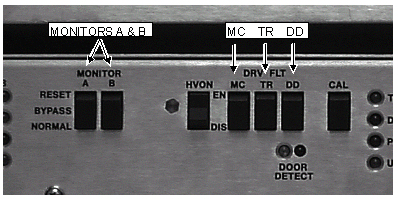
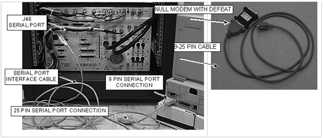
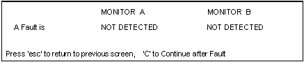

Proprietary to General Electric
Direction 5670000, Rev# 1
Optima MR450w 1.5T Service Methods
Module Version 1.0, Version Date 5/3/07
Proprietary to General Electric |
| Required Persons | Preliminary Reqs | Procedure | Finalization |
|---|---|---|---|
| 1 | Not Applicable | 15 mins | Not Applicable |
A Laptop and Serial Port I/F cable (vendor part # 510074) will be required if performing the proprietary procedure.
| NOTE: | The use of the RF Power Measurement Kit to complete the RF Power Monitor Check is highly recommended. |
| Item | Qty | Effectivity | Part# | Manufacturer | |
|---|---|---|---|---|---|
| REQUIRED WITHOUT RF POWER MEASUREMENT KIT: RF Test Cables Kit | 1 | - | 46-255816G1 | - | |
| 50 ohm, 200 Watt, 30 dB attenuator - Bird Model 8322 (If working with RF Power Measurement Kit, only required with G1 Kit. Always required if working without RF Power Measurement Kit.) | 1 | - | 46-255837P10 | - | |
| Oscilloscope | 1 | - | 46-183029P61 | - | |
| Laptop serial cable (optional) | 1 | - | 2124497-46 | - | |
| REQUIRED WITHOUT RF POWER MEASUREMENT KIT: Wattmeter and appropriate elements (optional) | 1 | - | Not supplied | - | |
| RF Power Measurement Kit | 1 | - | 46-317724G1 or G2 | - | |
| Condition | Reference | Effectivity |
|---|---|---|
Perform the prerequisite calibration procedures in the sequence listed. 1a: Dummy Load & Cables Calibration(Do if NOT using the RF Power Measurement Kit)-- Calibration required whenever using the dummy load and cables. This value will be frequency specific and can change over time. 1b: Scope characterization (Do if NOT using the RF Power Measurement Kit) This should be done for scopes with bandwidths less than 300 MHz. 2: SRF Max Power RF Out Setup and Calibration At initial installation or when the RFI, UCERD Exciter, or RF Amps are repaired or replaced. | - | - |
Pre-requisite - Signa must be fully functional and properly calibrated. Pre-requisite - Software must be running with the system capable of normal imaging. | - | - |
Verify that the system is not scanning and that all coils have been removed from the magnet bore. See the IMPORTANT message on this page.
| ||||
| PROPERTY DAMAGE! TO PREVENT COIL AND ASSOCIATED SWITCH DAMAGE, REMOVE ALL PHANTOMS AND HARDWARE (I.E., HEAD COIL, SURFACE COIL…) FROM THE MAGNET BORE. | ||||
Remove the front door from the SRF Cabinet.
Set SW2 “TR” to disable on the Driver Module.
See Illustration 1. On the front of the SSM place the 2 (two) power MONITOR switches (A and B) to the middle BYPASS position.
Illustration 1: SSM FRONT PANEL SWITCHES DISABLED

Remove the test window from the Test Switches and Test LEDS on the front of the SSM. See Illustration 2
Illustration 2: INSIDE THE TEST WINDOW

| NOTE: | Order of DIP switch placement is important otherwise the system will not recognize changes. |
Place the first four switches (from the left) in the order and positions shown in Table 1 and leave in these positions for the duration of the test. See Table 2 for the alternate proprietary procedure.
Table 1: SWITCH POSITIONS
| SWITCH NUMBER | POSITION |
| 2 | UP |
| 3 | DOWN |
| 4 | UP |
| 1 | UP |
The TEST LED will illuminate. This is the yellow LED to the right of the CAL switch.
Refer to Table 2 for the alternate proprietary procedure hardware configuration.
| NOTE: | The alternate proprietary procedure utilizes the field laptop and the MONS1.EXE software to detect any faults from RF power monitors A and B. A long (length depends on the distance between the RF/PDU Cabinet and the OW Console at your site) 25 pin female to 25 pin male serial cable (NOT NULL MODEM) can be used with cable 2124497-46 described below in Table 2 to remotely monitor and reset power monitor faults from where prescanning changes are being made at the OW Console. While the cable length probably shouldn’t exceed 50 feet (15.24 meters) in order for reliable remote monitoring to take place, longer cable lengths (especially if the cable in use is shielded) may work. Alternatively, if the 2124497-6 cable is unavailable, the same locally procured long cable with a null modem adapter affixed to one end and a 25 pin female to 9 pin female adapter connected to the other end could also be used. See Table 2 below. |
Table 2: ALTERNATE PROPRIETARY PROCEDURE USING LAPTOP
| Connect the laptop serial port to J46 on the rear of the SSM, using cable part number 2124497-46 (Vendor part # 510074, supplied with every cabinet). See Illustration 3. If this cable is not available, use a suitable null modem and 9-25 pin (female on both ends) cable adapter. |
Illustration 3: ALTERNATE PROPRIETARY PROCEDURE USING LAPTOP

If using the Alternate Proprietary Procedure using the Laptop, see Table 3 for laptop's using Windows 2000 or Table 4 for laptop's using Windows 95/98.
| NOTE: | Only version 2.2 of MONS1.EXE is compatible with all MR system types. This is the version currently available from Current (2003 and higher) Signa Service Methods CDROM. |
Table 3: ALTERNATE PROPRIETARY PROCEDURE - Windows 2000 LAPTOP SOFTWARE
Start the software diagnostic program MONS1.EXE on the laptop.
Continue to Step 9 |
Table 4: ALTERNATE PROPRIETARY PROCEDURE — Windows 95/98 LAPTOP SOFTWARE
Start the software diagnostic program MONS1.EXE on the laptop.
Follow the setup program instructions to install the tool onto the laptop. The MONS1.EXE must be run in MS-DOS mode and not from a Windows shell to DOS. Once the installation is complete, from Windows 95/98 perform the following steps:
Continue to, Step 9 . |
Once the mons1.exe program has started then select [N] (next screen) and then [T] (test mode) to reach a screen like that shown in Illustration 4.
Illustration 4: ‘T’ TEST MODE SCREEN (NO FAULT)

The screen shown in Illustration 4 will be used to remotely and individually monitor Power Monitors A and B for faults.
When a fault occurs the word DETECTED will be displayed below the power monitor that registered the fault. Illustration 5 shows a situation where both power monitors registered a fault.
Illustration 5: ‘T’ TEST MODE SCREEN (WITH FAULT)

The <C> key on the laptop permits the FE to reset the status of Monitors A and B displayed on the Test Mode Screen to “Not Detected” after the FE has manually reset the Power Monitor A and B Reset Switches on the front of the SSM.
| NOTE: | When appropriate use the RF Power Measurement Kit, Wattmeter, or Oscilloscope to measure the RF output power and validate that the power monitors are faulting or not faulting at the proper RF power levels. While the Main Screen of the MONS1.EXE software also provides a power measurement readout display for each power monitor, the integrity of each power monitor should be validated independently using the RF Power Measurement Kit, Wattmeter, or Oscilloscope. |
If you are using the RF Power Measurement Kit then calibrate the scope by referring to the RF Power Measurement Kit laminated card set.
Look in the upper right corner of each card and find the card labeled CAL.
Configure the scope as in the illustration on the card.
Follow the directions on the card to calibrate the scope using the 4 dBm calibrator.
If you are not using the RF Power Measurement Kit then complete the Dummy Load and Cables Calibration procedure in DUMMY LOAD AND CABLES CALIBRATION. If using the scope to measure the RF output power then also make sure that the scope correction factor has been determined for the input channel to be used as described in Characterization for Scopes With Less Than 300 MHz Bandwidth.
Continue in the process to SRF Power Monitor Head Hardware Setup And Checks.
No finalization steps.